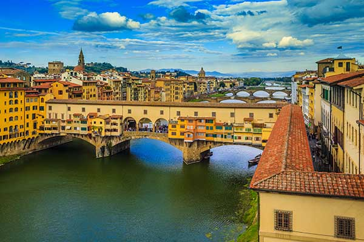
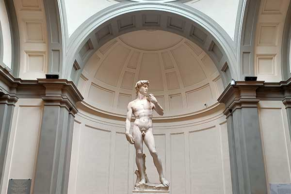
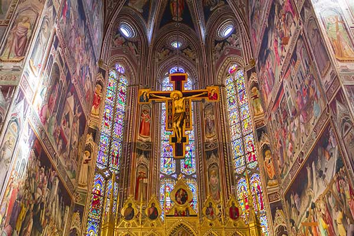

Florence Duomo
Florence Duomo is the largest brick dome ever built and can be seen from anywhere in the city. The exterior of the dome is decorated with beautiful mosaics. The interior is equally impressive, with intricate frescoes covering the walls and ceiling.

Uffizi Gallery
The Uffizi Gallery is home to many Renaissance masterpieces, including paintings by Leonardo da Vinci, Michelangelo, and Botticelli. The gallery is located in the Piazzale degli Uffizi, a building commissioned by the Medici family in the 16th century.

Palazzo Vecchio
The Palazzo Vecchio was built in the 13th century and served as the town hall for many years. The exterior of the building is very ornate, with a large clock tower and many statues.

Ponte Vecchio
The Ponte Vecchio is Florence's most famous bridge over the Arno and a must see on the list of 'Things to see in Florence Italy'. The bridge is best known for its shops, which are located on the bridge.

Accademia Gallery
Michelangelo's
The Galleria dell’Accademia of Florence is an art school, where a large collection of sculptures is collected that served to inspire the students. In addition to famous statues, the Galleria also consists of a collection of works of art created by students of the Accademia, a large collection of paintings by Florentine artists, religious prints from the Middle Ages and Russian icons.

Basilica di Santa Croce
The Basilica of Santa Croce was built to outperform the competing Santa Maria Novella. However, the Gothic basilica is best known for the famous Florentines, who are buried there, such as Machiavelli, Michelangelo, Vasari and Galileo Galilei.